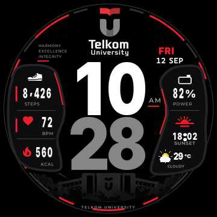

TEL-U Performance V6
Preview dari BIN hasil build untuk Amazfit T-Rex Pro. Uji perangkat fisik masih pending.

Siang 10:28, 8.426 steps, 82%
Skenario solar dipilih untuk memeriksa layout. Perilaku transisi otomatis tetap mengikuti firmware dan belum dibuktikan oleh preview ini.
Unduh BIN V6 | Laporan binary | Checklist perangkat